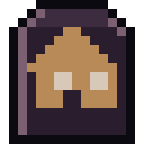
O mapa é a sua cidade
Ruas e lugares reais pelo GPS. Você só vê o que está à sua frente; prédios tapam a visão e a noite encurta tudo.
Ande. O corvo está vendo.
Sobrevivência zumbi para Android jogada andando de verdade. O mapa é a sua cidade, e ela está cheia de mortos.
O jogo
Footfall é um jogo de sobrevivência zumbi em pixel art gótico jogado andando pela sua cidade real. As ruas, as farmácias, os mercados e os postos são os de verdade, e estão tomados.
Ande para achar o que precisa. Saqueie lugares que enchem de novo toda semana, cuide de cada ferida, levante uma base com o seu grupo e aguente as noites. Quanto mais você anda, mais longe chega.
Quando você puser a primeira porta, um corvo pousa nela. Ele fica.
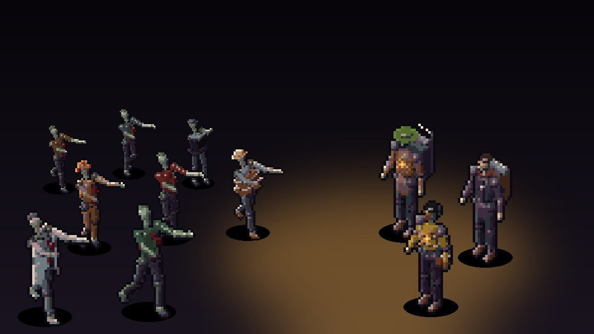

Ruas e lugares reais pelo GPS. Você só vê o que está à sua frente; prédios tapam a visão e a noite encurta tudo.
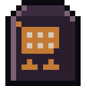
Pela porta é rápido; entrando tem mais coisa, e mais zumbi. Cada móvel faz barulho ao abrir. Tudo enche de novo toda semana.
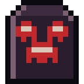
Lute de perto: empurre, agache, mire, arremesse. Cada arma gasta e faz barulho. Quem estiver a até 120 m entra junto.
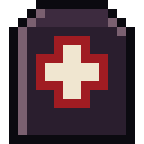
Feridas tratadas passo a passo. Fome, sede, cansaço e o clima real. Mordida infecta, e não tem cura.
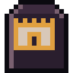
Demarque na grade, levante paredes, ponha portas, baús, horta e armadilhas. Toda noite ela é atacada.
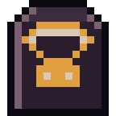
Uma caixa de correio na base é o mercado de todo mundo. A moeda é o selo, e ninguém vê o que os outros negociam.
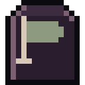
Lugares grandes têm bandeira. Vença os guardas na arena e o ponto é do seu grupo, pagando selos todo dia.
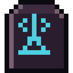
Com um rádio, você ouve a horda da semana, as caixas de suprimento, pistas e missões.
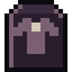
Do comum ao lendário. Algumas só saem do corpo do zumbi do mesmo ofício: polícia, bombeiro, médico…
Imagens
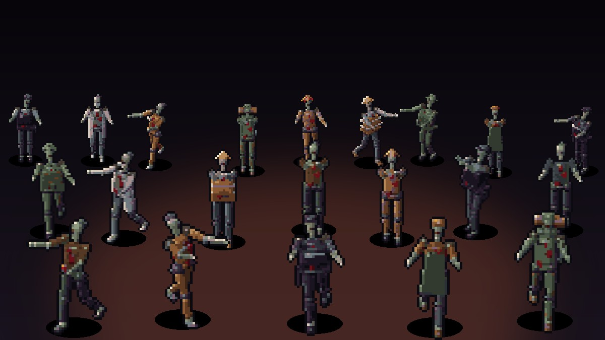
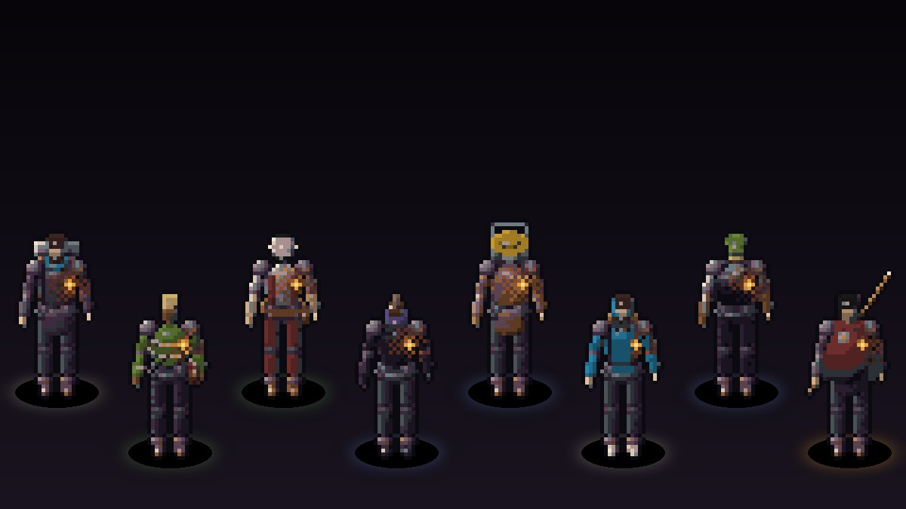
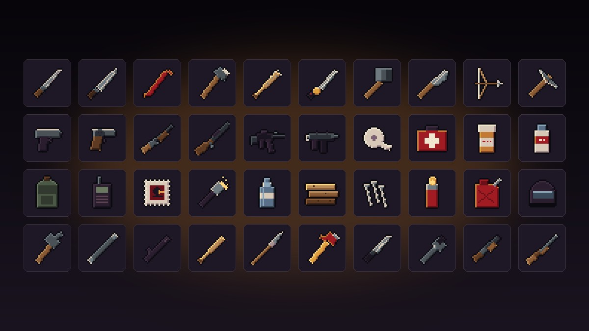
Antes de sair
Baixar e apoiar
Grátis, sem anúncios. Em breve na Google Play; siga as redes para entrar no teste.
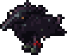
Um jogo feito por uma pessoa só, sem anúncios e sem vender vantagem. O seu apoio mantém os servidores ligados e o corvo acordado.